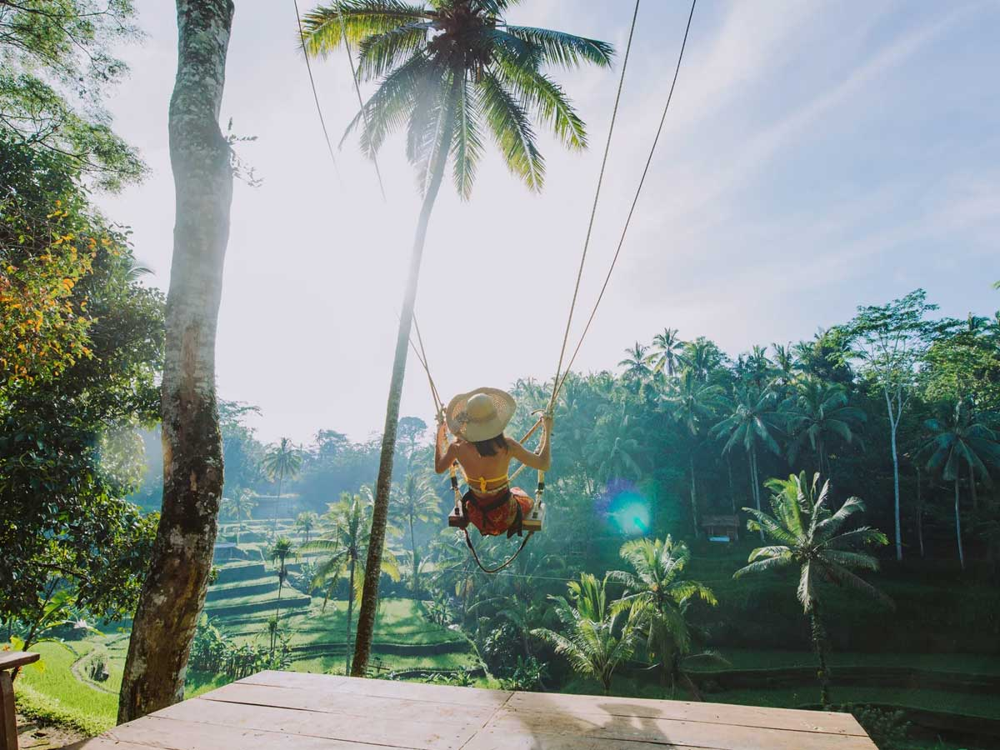
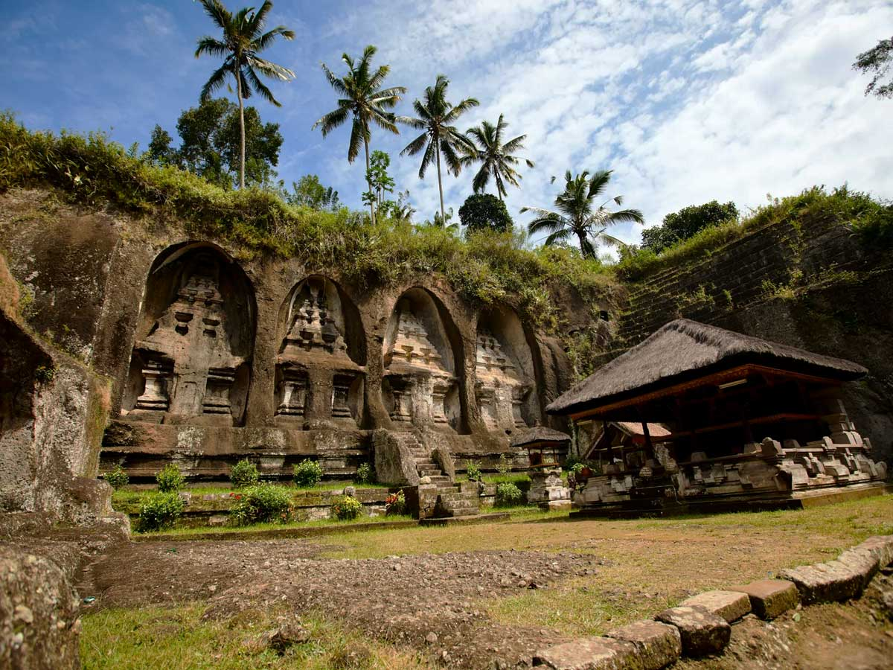
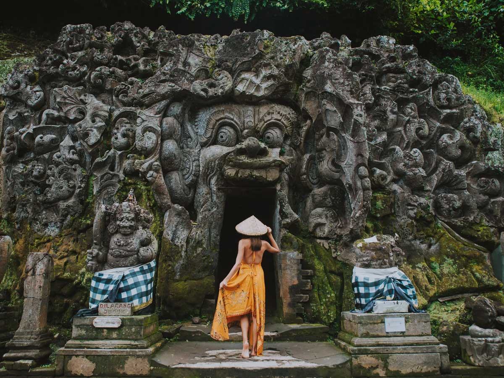
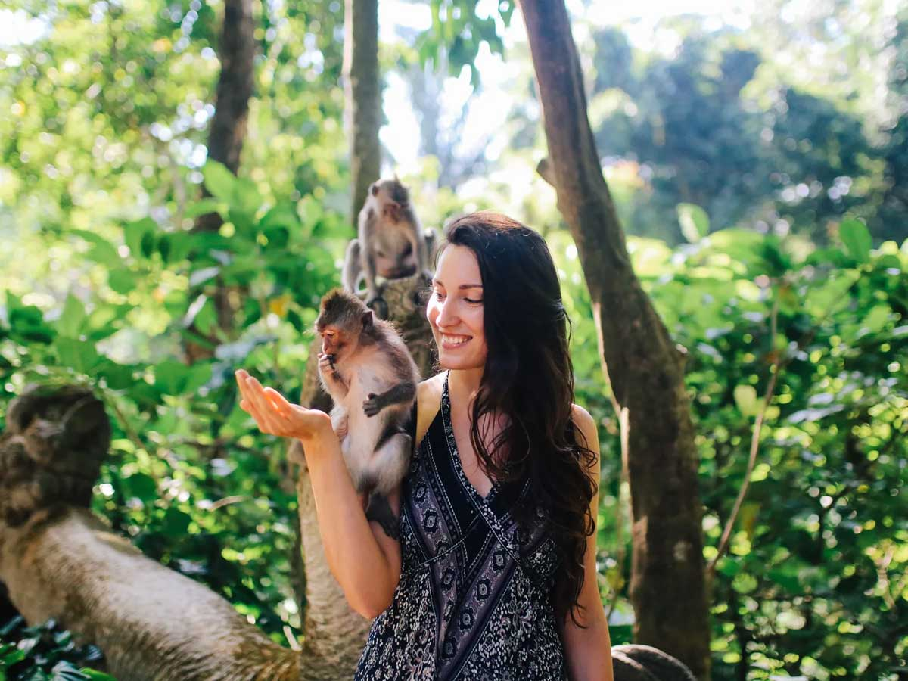

What You'll Do

Tegalalang Rice Terrace & Coffee Plantation
We start at the iconic stepped rice fields north of Ubud, hand-carved over generations and still fed by Bali's thousand year old subak irrigation system. Right beside it, walk through a working plantation to see how coffee grows and taste the famous kopi luwak straight from the source. Tastings are complimentary.

Swing
Right at the plantation, strap into a harness and soar out over the jungle valley on Bali's famous swing - nothing below you but treetops and the rice fields far down. Choose a gentle low swing or the high one that flings you well out over the gorge. Optional, and worth it for the photo alone.

Tirta Empul Holy Water Temple
Bali's most sacred spring temple, where Balinese Hindus have performed the melukat purification ritual for over a thousand years. You're welcome to join the ritual yourself - we'll arrange a sarong and walk you through the etiquette so you can take part with confidence and respect.

Gunung Kawi Temple
An 11th-century wonder carved directly into the rock face of a river valley. Ten giant shrines, each cut from the living cliff, reached by a staircase down through emerald rice paddies. It's quieter than the famous temples. A little walking, a lot of reward.

Goa Gajah - The Elephant Cave
A 9th-century sanctuary whose cave mouth is carved into a monstrous demon face you step straight through. Inside are ancient meditation niches; outside, bathing pools and jungle paths lead down to hidden shrines. One of Ubud's oldest and most mysterious sites.

Tegenungan Waterfall
A wide, powerful waterfall tucked into the jungle just outside Ubud, with a natural pool at its base you can swim in (though sometimes not, if the water is too high). It's one of the few major Bali waterfalls with easy access - a short walk down, and a genuinely refreshing reward after a morning of temples.

Sacred Monkey Forest Sanctuary
We finish in the heart of Ubud at a moss-covered jungle temple complex, home to more than 700 long-tailed macaques. Walk beneath ancient banyan roots and past weathered stone guardians in one of Bali's most atmospheric sanctuaries. Keep a firm hold on your belongings and give the monkeys room, and they are easy enough to be around.